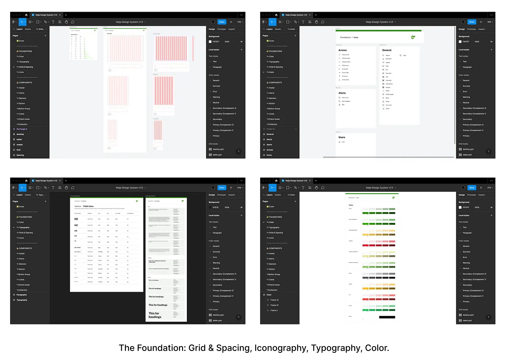

Making the design system that works.
A design system is a set of standards, guidelines, and tools that help teams design and build digital products more efficiently and consistently. It serves as a single source of truth for the visual and interactive elements of a product, including typography, color, layout, and functionality.
One of the main benefits of a design system is that it promotes consistency across a product or brand. By establishing a set of rules for design and development, a design system helps ensure that all parts of a product feel connected and cohesive, rather than Making sure the button group is consistent with the rest of the design system Make sure the button group is consistent with the rest of the design system, like a collection of unrelated features. This can be especially important for large organizations that have multiple teams working on different parts of the product.
A design system can also help teams work more efficiently by providing a set of pre-designed and tested components that can be quickly and easily incorporated into new designs. This can save time and reduce the need for teams to start from scratch every time they work on a new feature or redesign an existing one.
Problem
The federal government of Nigeria operates numerous websites and digital applications, each with its own design language and user experience. This lack of consistency can be confusing and frustrating for citizens trying to access government services online.
Furthermore, the lack of a centralized design system results in inefficient resource utilization because designers must recreate common UI elements and patterns for each new project.

Solution
To address this problem, we propose the development of a design system that will provide a shared set of visual design principles and styles, as well as a library of reusable UI components and patterns, for use across all federal government digital products. This will improve the user experience for citizens as well as increase efficiency in the design and development process for government teams.
The team consisted of a product manager, brand designers, product designers, UX and content writers, and illustrators.
Research & Process
We conducted user research to understand the common pain points and needs across our products. We also surveyed the design teams to gather their input and perspectives.
Through this research, we identified the following goals for our design system:
- Promote consistency in the user experience
- Reduce design and development time by providing reusable components
- Enable teams to iterate on designs while maintaining brand consistency quickly
Definition
Based on our research, we defined the scope of our design system as follows:
- A shared set of visual design principles and styles
- A library of reusable UI components and patterns
- A design process and documentation to guide teams in using the design system.
Design Components
We began by creating and defining the foundation for the overall look and feel of our design system, which includes colors, typography, grid and space, and icons.

Ensuring that the teams could easily find and use the design system resources. This included guidelines for using the components as well as a process for submitting new components or requests for changes to the design system
Next Steps
The website is up and running, and open to contributors, who are willing to contribute, maintain, and scale the design system.
Grateful appreciation is extended to the core contributors, as it is noted that not all individuals who exhibit heroic qualities are symbolically represented by the wearing of capes. 💯🥂